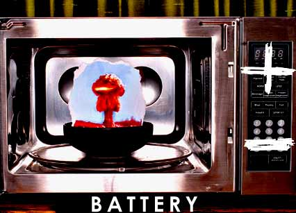

 |
|||
When I want popcorn , I want to press one button that's labeled “popcorn.” There are just some foods you should labor over, but popcorn is not one of them. There is enough inconvenience in everyday existence to justify the convenience of the one-button rule for popcorn. If I'm feeling ambitious, I will put a tomato in the microwave for 45 minutes. I can be making my own sun-dried tomatoes while I'm watching my favorite re-runs of M*A*S*H. If I'm in the mood for a spectacle, I'll stay in the kitchen with my face pressed up against the microwave's glass door, watching the expansion of a marshmallow as it puffs in and out like a little lung. The microwave knows no limits, and renders all other kitchen appliances obsolete. If you want to waste your time hovering over a conventional oven like a 19th century housewife suffering from hysteria or diphtheria, fine. I don't have the time. |
When I was a kid, reheating food in my parents' kitchen, I would ask, “ How long should I reheat this food ?” And they shout over their shoulders, “Nuke it for 20!” Nuke it for 20. Nuke, as in nuclear. Nuclear bomb, nuclear family, nuclear catastrophe. It's in the name. Microwaves use micro-waves of radiation to cook food. Maybe the Soviet Union was on to something when they banned microwaves in 1976. But we were too preoccupied with the nuclear arms race to notice that we were eating radioactive potatoes and electrically charged Lean Cuisine. Ninety percent of American homes have a microwave as a part of its nuclear unit. Since nursing babies has fallen out of fashion, along with crimped hair and stretch pants, babies' bottles are warmed in the microwave. Researchers (not just commie pinko researchers) have claimed that microwaved milk is a serious heath hazard. But keypad-cooking habits are still very much in vogue. When we all get cancer in a few decades, and we need radiation treatment, maybe we'll wish we all didn't OD on it earlier in life. |
||